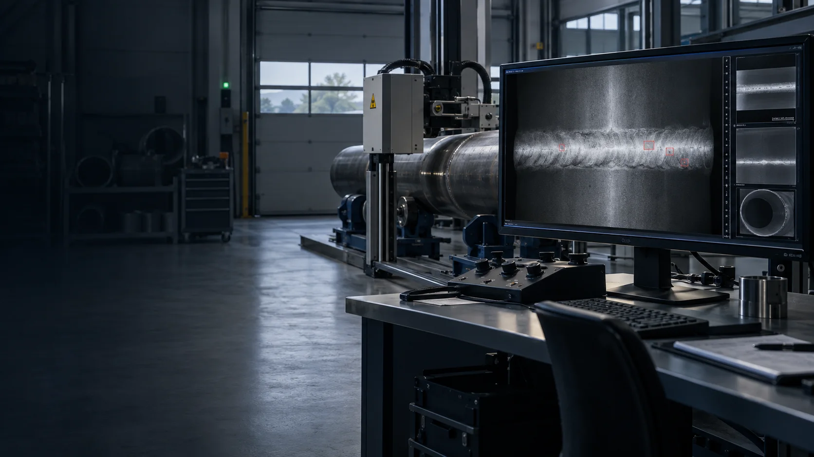
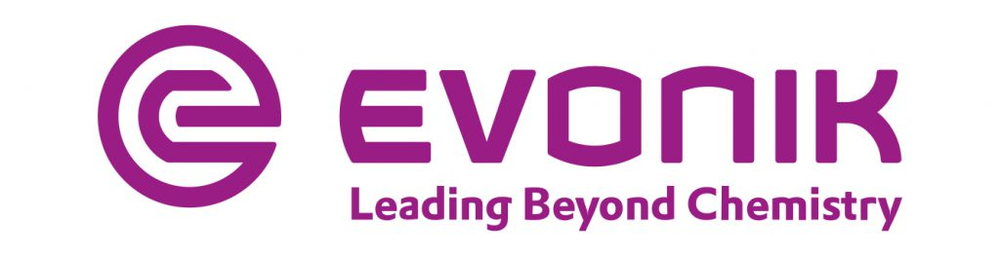
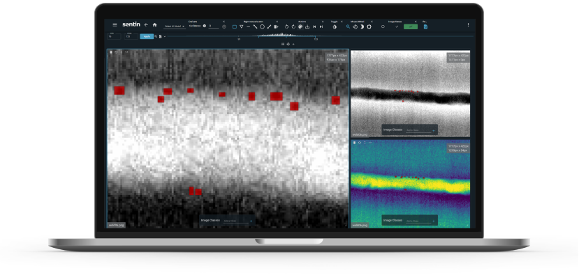
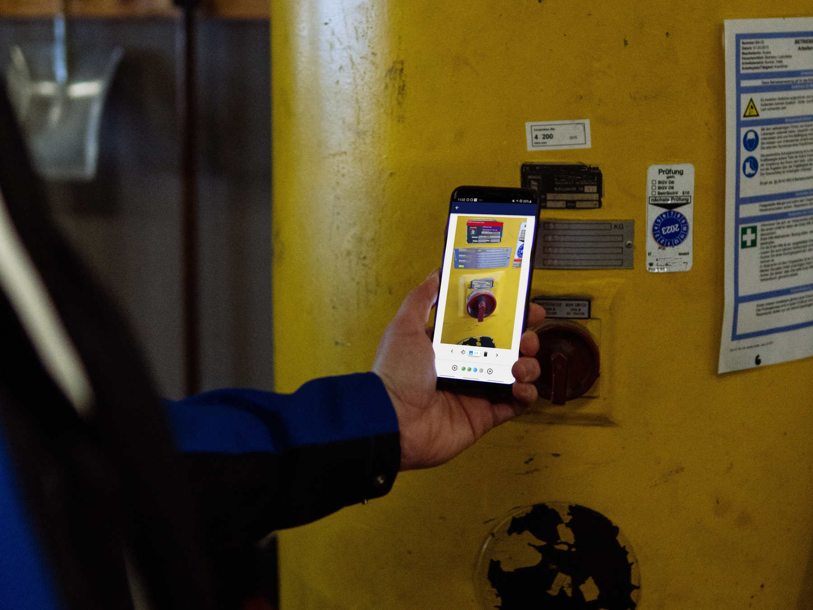
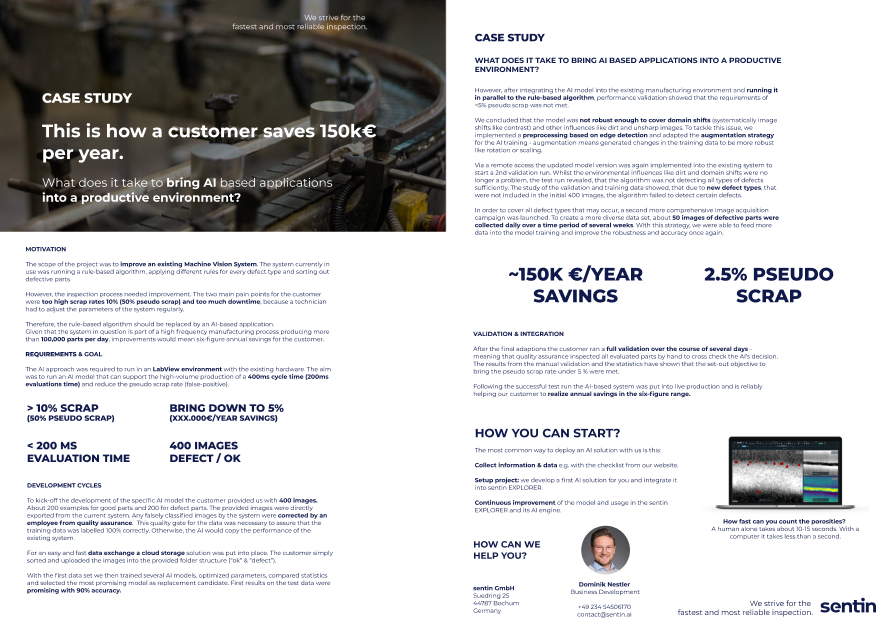

sentin EXPLORER
Bildauswertung, die Fachwissen verstärkt.
Für NDT, DICONDE, industrielle Bilddaten, manuelle Prüfungen und automatisierte Serienprozesse.
- Daten
- 12- und 16-Bit
- Standards
- DICOM, DICONDE
- Betrieb
- Lokal, Server, Cloud

We believe that digital transformation and technologies like AI are key to achieving this goal, as they combine the knowledge of many auditors and can make decisions in less than a second.
Referenzen und Anerkennung

Prüfteams stehen unter hohem Zeitdruck. Sentin verbindet ihre Erfahrung mit digitaler Bildauswertung und KI.
Zerstörungsfreie Prüfungen verhindern Qualitätsschwankungen und Reklamationen. Vor allem schaffen sie Sicherheit.
Ergebnisse sind jedoch nicht immer eindeutig. Häufig prüfen mehrere Personen dasselbe Bild oder holen eine zweite Meinung ein. Bei ausgelasteten Prüfteams wird genau dieser Prozess zum Engpass.
Sentin entwickelt Softwarelösungen, die Prüfprozesse automatisieren oder Prüfer gezielt unterstützen. Eine computergestützte Auswertung kann Sicherheit, Genauigkeit und Geschwindigkeit erhöhen.
Prüfungen und Inspektionen sind in vielen Branchen erforderlich, von der Schwerindustrie bis zur E-Mobilität. Sentin kombiniert das Wissen erfahrener Prüfer und nutzt digitale Technologien, um Entscheidungen konsistenter und in weniger Zeit zu ermöglichen.

Beispielmessung. Ergebnisse können abhängig von Bildauflösung, Bildqualität, Hardware, Netzwerk und Prüfaufgabe abweichen.
Prüfdaten sauber erfassen, konsistent auswerten und nachvollziehbar in bestehende Systeme übergeben.
sentin EXPLORER
Für NDT, DICONDE, industrielle Bilddaten, manuelle Prüfungen und automatisierte Serienprozesse.

Asset Collector
Die Smartphone-App erkennt Typenschild-Felder mit KI und überträgt strukturierte Daten in bestehende Systeme.
Wir verbinden Software, KI, Infrastruktur und Prüfhardware zu einem belastbaren Gesamtprozess.
Alle ServicesSentin unterstützt jede Übergabe, ohne bestehende Fachkenntnis oder Hardware unnötig zu ersetzen.
Nach Datenart filtern oder alle aktuellen Lösungen vergleichen.
X-Ray
X-Ray
X-Ray
CT und X-Ray
X-Ray und RGB
X-Ray und RGB
RGB
RGB und Daten
Schneller. Optimierte Abläufe reduzieren Wartezeit und wiederholte Auswertungen.
Zukunftssicher. KI, Cloud und digitale Archive wachsen mit Ihren Anforderungen.
Profitabler. Bessere Prüfleistungen und Produkte erhöhen Ihre Gewinnspanne.

Case Study
Die Fallstudie zeigt, wie eine KI-basierte Anwendung in eine produktive Fertigungsumgebung integriert wurde.
Case Study herunterladen„Moderne Technologien wie Künstliche Intelligenz sind in der Industrie angekommen.“
Dr. Uwe Ewert
Experte für digitale Radiographie, ehemaliger Fachbereichsleiter bei der BAM und Mitglied internationaler Normungsausschüsse.
Dr. Ewert betont insbesondere den Mehrwert aus der Kombination konventioneller und KI-basierter Algorithmen für digitale Radiographie und ZfP.
Ob Archivierung, Automatisierung oder ein neuer KI-gestützter Service: Wir bewerten gemeinsam den sinnvollsten nächsten Schritt.